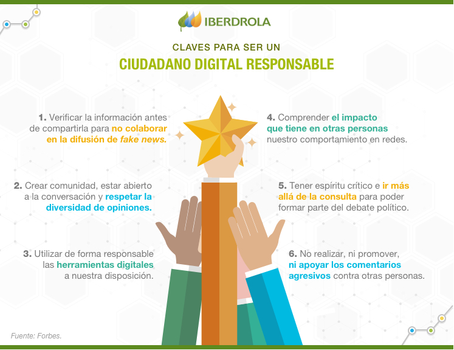

Ética en Internet
Tenemos que preguntarnos ....
- ¿Respeto la opinión de los demás? En Internet cualquiera tiene voz y tenemos que ser conscientes de la diversidad de opiniones
- Lo que hago ¿Qué impacto tiene en la red? En internet nuestros clicks son votos en esa gran democracia que es la red global, virtual, pero tiene su reflejo en el mundo físico.
- ¿Mi comportamiento en las redes sociales tiene influencia negativa en otras personas? lenguaje agresivo, apoyo a contenido violento, ¿A que le doy like?¿ qué divulgo? ...
- ¿Verifico la información que divulgo? o soy un eslabón más en la divulgación de bulos y fake news?
- Si creo contenido ¿Respeto los derechos de autor? ¿agradecemos a los que comparten? ¿compartimos nuestras obras? ¿descargamos software ilegalmente o pirateamos contenido audiovisual?, y evito el uso del hot linking
- Si utilizo datos de personas, imágenes de alumnos.. ¿conozco los derecho a la privacidad y la respeto?

Fuente Iberdrola- Compromiso social - Ética digital
Internet es una cosa maravillosa, crea comunidad si se está abierto a la comunicación y a la veracidad.

Photo by jesse orrico on Unsplash

Ciudadanía digital por Alfabetizacion: INTEF www.http://aprende.intef.es/ y Privacidad: OSI Oficina de Seguridad del Internauta bajo licencia Creative Commons Reconocimiento-NoComercial-CompartirIgual 4.0 Internacional License.